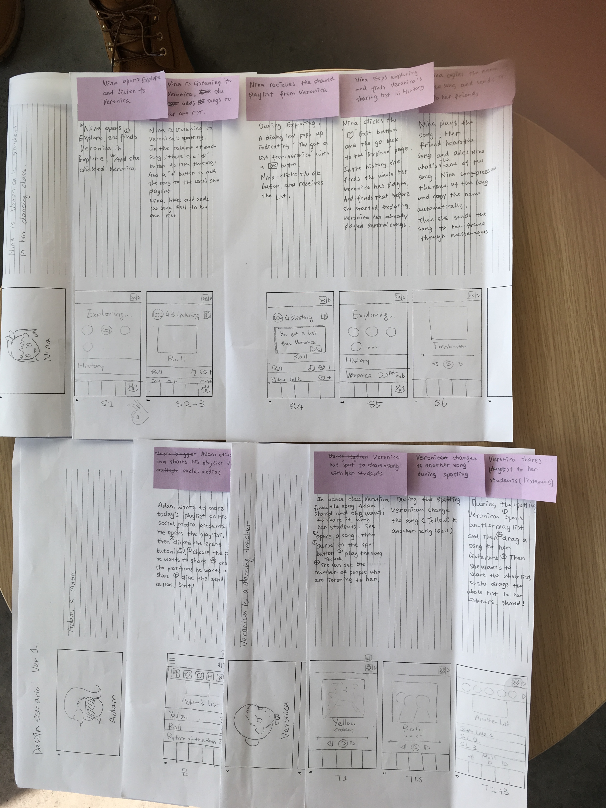
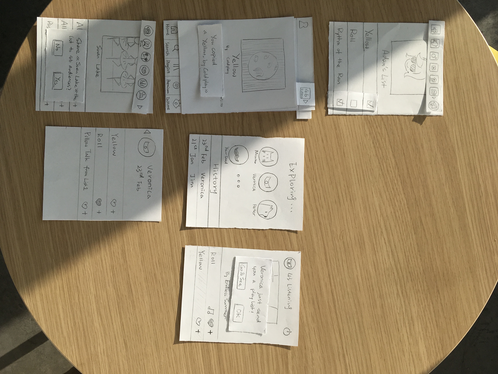

Design Challenge： To make the music sharing function faster, more visible and attractive
step 1 Learn about users: Introspection --> Observation --> Interviews
We employed a few design techniques to learn about the user's perspective, starting with the cheapest and easiest way, intropspection. And use the "Think-Aloud" protocol by Simon & Newell, to get a richer understanding of the details of what users are thinking as they work.
Then we observed users as they use interactive systems, in our case is sharing a song in Spotify.
Each of the team members conducted three interviews to understand how people currently interact with objects or technology better, what goes wrong, and also what goes right. Using the outcome of interviews to help us improve and create new designs.
step 2 Interpret users: Interaction Points --> User Profile --> Personas & Extreme Characters
We collected 11 interaction points from the information-gathering period. Then started to illustrate our user profile to describe the characteristics of a user. From this we identified the general characteristics of a classof users. In the end, we got the user profile which lists a set of key characteristics that define the target audience


step 3 Generate ideas: Use Scenario --> Brainstorming
We made a use scenario to tells a story, synthesized from observations, data and interviews, to illustrate how one or more users sharing music in their daily lives. Then we also have a brainstorming session to generate more ideas.
step 4 Design concept: Design Space --> Design Concept
Design involves thinking about users, technology and how they interact. Our design concept is "To improve the sharing experience of multiple user face to face sharing by linking users together".
And we also developed a rich design space to improves the quality of the final solution by providing the designer with a wider range of design options from which to choose.


step 5 Design Prototype: Design Diagram --> Prototype
Capture the essence of our design with a one-page illustrated diagram that highlights the key functions and use of the music sharing system. Use an exploded diagram to emphasize key system functions or a process diagram to emphasize use over time.
step 6 Evaluation： Walkthrough --> Revised Concept
We used our paper prototype to conduct a walkthrough with some of our colleague. And we are trying to assess the design from different perspectives, according to relevant design principles and rules.


Video Prototyping